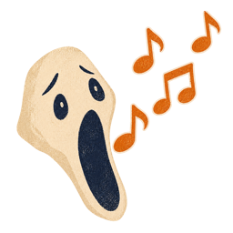

<!doctype html>
<html lang="ru">
<head>
<meta charset="utf-8">
<meta name="viewport" content="width=device-width,initial-scale=1,user-scalable=no">
<meta name="description" content="Собиратель душ — хэллоуинская игра-змейка: собери души в правильном порядке и проведи их через ворота до рассвета.">
<link rel="icon" href="data:image/svg+xml,%3Csvg xmlns=%27http://www.w3.org/2000/svg%27 viewBox=%270 0 100 100%27%3E%3Ctext y=%27.9em%27 font-size=%2790%27%3E%F0%9F%92%80%3C/text%3E%3C/svg%3E">
<title>Собиратель душ</title>
<link rel="preconnect" href="https://fonts.googleapis.com">
<link href="https://fonts.googleapis.com/css2?family=Rubik+Wet+Paint&display=block&subset=cyrillic" rel="stylesheet">
<style>
  html,body{margin:0;height:100%;background:#0b0714;overflow:hidden;font-family:system-ui,-apple-system,sans-serif;color:#f3e9d2}
  #pad{position:fixed;display:none;grid-template-columns:repeat(3,1fr);grid-template-rows:repeat(3,1fr);gap:6px;z-index:5;-webkit-user-select:none;user-select:none;-webkit-touch-callout:none;touch-action:none}
  #pad button{border:3px solid #3a2a16;border-radius:18px;background:rgba(224,210,170,.88);color:#3a2a16;font-size:26px;padding:0;line-height:1;touch-action:none;-webkit-tap-highlight-color:transparent;font-family:system-ui}
  #pad button:active{background:rgba(160,140,90,.95)}
  #pad.skin button{border:0;border-radius:0;background:url('assets/btn.png') center/100% 100% no-repeat;display:flex;align-items:center;justify-content:center;transition:transform .06s,filter .06s}
  #pad.skin button:active{background:url('assets/btn.png') center/100% 100% no-repeat;transform:scale(.92);filter:brightness(.82)}
  #pad button svg{width:46%;height:46%;pointer-events:none;filter:drop-shadow(0 1px 0 rgba(255,255,255,.4))}
  #vol{position:fixed;left:-100px;top:0;width:38px;height:38px;border:0;background:none;padding:0;cursor:pointer;line-height:1;font-size:20px}
  #vol img{width:100%;height:100%;display:block;pointer-events:none;transition:filter .2s}
  #vol.off img{filter:grayscale(1) opacity(.45)}
  #vol .slash{display:none;position:absolute;left:6%;right:6%;top:50%;height:4px;margin-top:-2px;background:#b3261e;border-radius:2px;transform:rotate(-45deg);pointer-events:none}
  #vol.off .slash{display:block}
  @keyframes vol-shake{0%,100%{transform:rotate(0) scale(1)}15%{transform:rotate(-14deg) scale(1.1)}30%{transform:rotate(12deg) scale(1.1)}45%{transform:rotate(-10deg) scale(1.06)}60%{transform:rotate(8deg)}75%{transform:rotate(-4deg)}}
  #vol.shake{animation:vol-shake .6s ease-in-out}
  canvas{display:block;width:100%;height:100%;touch-action:none}
</style>
</head>
<body>
<canvas id="c"></canvas>
<script>
// ---------- Настройки ----------
const W = 20, H = 20;                 // поле 20×20, замкнуто в кольцо, видно целиком
// телефон или планшет (сенсорный экран): на таких устройствах нет клавиатуры, поэтому показываем кнопки управления
const IS_TOUCH = (window.matchMedia && matchMedia('(pointer: coarse)').matches) || navigator.maxTouchPoints > 0;
let PAD_BTN = 64;                     // размер кнопки управления в пикселях (считается в resize)
let PAD_RESERVE = 0;                  // сколько места внизу оставляем под кнопки на вертикальном экране
let HUD = 140;                        // высота шапки в пикселях (считается в resize по размеру свитка)
const TYPES = ['bat', 'ghost', 'witch', 'owl'];
const EMOJI = { bat:'🦇', ghost:'👻', witch:'🧙', owl:'🦉', skeleton:'💀', pumpkin:'🎃' };
const COLOR = { bat:'#7b4bd6', ghost:'#8fd3ff', witch:'#4ec06b', owl:'#ff9a3c', skeleton:'#efe6cf', pumpkin:'#c24a00' };
const SEQ_LEN = 8;                    // душ на воротах
const START_DELAY = 5;                // секунд ожидания в начале: скелет стоит, пока игрок не нажмёт стрелку (или пока не пройдёт пауза)
const NIGHT = 120;                    // секунд до рассвета (2 минуты)
const STEP_MS = 480;                  // скорость скелета: шаг раз в 0.48 с (≈2.1 клетки/с)
const PUMPKINS = 10;
const WALL_SEGMENTS = 7;              // внутренние стены: сегменты по 3–5 клеток
const SPARE = 1;                      // запас блуждающих душ каждого типа
const GATE = { x0: 15, y0: 0, w: 5, h: 2 };   // большие ворота в правом верхнем углу (кольцо: заходить можно и с краёв)
const SPEED = { bat: 0.7, ghost: 0.45, witch: 0.25, owl: 0.1 };   // шанс шага за ход: летучие мыши быстрые, совы медленные
const SHAKE_S = 0.22;                 // сколько секунд скелет вздрагивает, когда нажата стрелка «назад»
const GRACE_S = 2;                    // секунд форы после тыквы: свеча рядом пока не убивает (скелет упирается в неё)
const PUMPKIN_RESPAWN = 0;            // 0 — съеденная тыква сразу появляется в случайном месте; N — через N шагов
const SHAPES = [                      // формы препятствий: как в классических змейках — столбы, блоки, рельсы, углы
  [[0,0],[0,1],[0,2],[1,2]],          // Г
  [[0,0],[1,0],[2,0],[1,1],[1,2]],    // Т
  [[1,0],[0,1],[1,1],[2,1],[1,2]],    // крест
  [[0,0],[1,0],[0,1],[1,1]],          // блок 2×2
  [[0,0],[0,1],[1,1],[2,1],[2,0]],    // скоба
  [[0,0],[1,0],[2,0],[3,0]],          // рельс
  [[0,0],[1,0],[2,0],[3,0],[4,0]],    // длинный рельс
  [[0,0],[1,1],[2,2]],                // диагональ
  [[0,0]],                            // столб
  [[0,0],[1,0]],                      // пара
];
const WALL_SHAPES = 13, WALL_MIN = 10;
// кладбищенские дорожки из плит: две аллеи через всё поле (кольцо) и подъезд к воротам.
// Чисто декоративные: ходить можно везде, но ограда на них не ставится — аллеи всегда свободны
const PATHS = new Set();
for (let x = 0; x < W; x++) PATHS.add(10 * W + x);
for (let y = 0; y < H; y++) PATHS.add(y * W + 10);
for (let y = 2; y <= 9; y++) PATHS.add(y * W + 17);

// ---------- Свитки ----------
// Подложки под тексты: положи PNG с прозрачным фоном в assets/ — scroll-rules, scroll-result, scroll-hint, scroll-hud.
// aspect = ширина/высота картинки, safe = безопасная зона для текста в долях картинки [x, y, ширина, высота].
// Пока файлов нет, рисуется пергамент-заглушка.
const SCROLL = {
  rules:  { aspect: 4 / 3, safe: [.15, .17, .70, .66] },
  result: { aspect: 2,     safe: [.15, .22, .70, .56] },
  hint:   { aspect: 6.7,   safe: [.10, .20, .80, .60] },
  hud:    { aspect: 7,     safe: [.06, .16, .88, .68] },
};
const INK = '#3a2a16', INK_TITLE = '#7a3b0c';
const HEAD_FONT = '"Rubik Wet Paint"';        // шрифт заголовков (Google Fonts, подгружается из интернета)

// ---------- Спрайты ----------
// Положи PNG в halloween-game/assets/ с именами bat, ghost, witch, owl, skeleton, pumpkin, gate, bone, wall —
// игра подхватит их сама. Пока файлов нет, рисуются плейсхолдеры.
const IMG = {};
// пока все картинки и шрифт заголовков не загрузились, игра ничего не показывает: иначе на долю секунды
// мелькают заглушки (пергамент, эмодзи), а потом подменяются настоящими картинками
let assetsReady = false;
{
  const pending = [...TYPES, 'skeleton', 'pumpkin', 'gate', 'volume', 'background'].map(k => new Promise(res => {
    const im = new Image();
    im.onload = () => { IMG[k] = im; res(); };
    im.onerror = () => res();                       // нет такого файла — это нормально, останется заглушка
    im.src = 'assets/' + k + '.png';
  }));
  const timeout = new Promise(res => setTimeout(res, 4000));      // не ждём дольше 4 секунд (например, нет интернета для шрифта)
  const font = document.fonts ? document.fonts.load('40px "Rubik Wet Paint"', 'Собиратель душ Души дома Рассвет Скелет обжёгся о свечу').catch(() => {}) : Promise.resolve();
  Promise.race([Promise.all([...pending, font]), timeout]).then(() => { assetsReady = true; });
}

// ---------- Утилиты ----------
const cv = document.getElementById('c'), ctx = cv.getContext('2d');
let cw, ch, dpr, CS, ox, oy;
const mod = (a, n) => ((a % n) + n) % n;
const wd = (d, n) => mod(d + n / 2, n) - n / 2;     // кратчайшая дельта по кольцу
const rnd = n => Math.floor(Math.random() * n);
function hash(x, y) {
  let h = (x * 374761393 + y * 668265263) | 0;
  h = (h ^ (h >>> 13)) * 1274126177 | 0;
  return (h ^ (h >>> 16)) >>> 0;
}
// ширина шапки: на низком экране (телефон лёжа) шапка не должна съедать больше пятой части высоты
function hudWidth() { return Math.min(cw - 16, 920, ch * 0.2 * SCROLL.hud.aspect); }
function resize() {
  dpr = window.devicePixelRatio || 1;
  cw = innerWidth; ch = innerHeight;
  cv.width = cw * dpr; cv.height = ch * dpr;
  ctx.setTransform(dpr, 0, 0, dpr, 0, 0);
  HUD = Math.round(8 + hudWidth() / SCROLL.hud.aspect + 10);
  PAD_BTN = Math.round(Math.max(52, Math.min(84, Math.min(cw, ch) * 0.17)));
  PAD_RESERVE = (IS_TOUCH && ch > cw) ? PAD_BTN * 3 + 36 : 0;           // вертикальный экран: кнопки под полем
  CS = Math.max(12, Math.floor(Math.min(cw / W, (ch - HUD - 10 - PAD_RESERVE) / H)));
  ox = Math.floor((cw - W * CS) / 2);
  oy = HUD + Math.floor((ch - HUD - PAD_RESERVE - H * CS) / 2);
}
addEventListener('resize', resize); resize();

// ---------- Состояние ----------
let S = null;

function inGate(x, y) { return x >= GATE.x0 && x < GATE.x0 + GATE.w && y >= GATE.y0 && y < GATE.y0 + GATE.h; }
function gateDist(x, y) {   // расстояние до ближайшей клетки ворот с учётом кольца
  let m = 99;
  for (let gy = GATE.y0; gy < GATE.y0 + GATE.h; gy++) for (let gx = GATE.x0; gx < GATE.x0 + GATE.w; gx++)
    m = Math.min(m, Math.max(Math.abs(wd(x - gx, W)), Math.abs(wd(y - gy, H))));
  return m;
}

function newGame() {
  let seq;
  do { seq = Array.from({ length: SEQ_LEN }, () => TYPES[rnd(TYPES.length)]); }
  while (!TYPES.every(t => seq.includes(t)));
  const reqCount = {};
  for (const t of TYPES) reqCount[t] = seq.filter(x => x === t).length;
  S = {
    state: 'start', seq, reqCount,
    head: { x: 5, y: 14 }, dir: { x: 0, y: -1 }, queue: [],
    tail: [], path: [], souls: [], pumpkins: [], respawn: [],
    moving: false, idle: 0, introT: 0, graceT: 0, shakeT: 0, t: NIGHT, acc: 0, msg: '', msgT: 0, flash: 0, elapsed: 0
  };
  S.walls = makeWalls(S.head);
  for (let i = 0; i < PUMPKINS; i++) spawnPumpkin();
  replenish();
}

function isWall(x, y) { return S.walls.has(y * W + x); }

// стены: фигуры (Г, Т, крест, блок, скоба, рельсы, столбы) со случайным поворотом.
// Фигуры не касаются друг друга (между ними остаётся проход), не подходят к воротам и старту,
// а всё поле остаётся связным с учётом кольца — застрять негде.
function makeWalls(start) {
  for (let attempt = 0; attempt < 400; attempt++) {
    const cells = new Set(), owner = new Map();
    let placedCount = 0;
    for (let k = 0; k < WALL_SHAPES; k++) {
      for (let n = 0; n < 80; n++) {
        let sh = SHAPES[rnd(SHAPES.length)];
        for (let r = rnd(4); r > 0; r--) sh = sh.map(([x, y]) => [-y, x]);
        if (Math.random() < 0.5) sh = sh.map(([x, y]) => [-x, y]);
        const x0 = rnd(W), y0 = rnd(H);
        const seg = sh.map(([x, y]) => ({ x: mod(x0 + x, W), y: mod(y0 + y, H) }));
        const good = seg.every(c => {
          if (gateDist(c.x, c.y) <= 2 || PATHS.has(c.y * W + c.x)) return false;
          if (c.x === 0 || c.y === 0 || c.x === W - 1 || c.y === H - 1) return false;   // у края поля свечей нет: переход через край всегда безопасен
          if (Math.abs(wd(c.x - start.x, W)) <= 2 && Math.abs(wd(c.y - start.y, H)) <= 2) return false;
          for (let dy = -1; dy <= 1; dy++) for (let dx = -1; dx <= 1; dx++) {
            const o = owner.get(mod(c.y + dy, H) * W + mod(c.x + dx, W));
            if (o !== undefined && o !== k) return false;
          }
          return true;
        });
        if (good) { for (const c of seg) { cells.add(c.y * W + c.x); owner.set(c.y * W + c.x, k); } placedCount++; break; }
      }
    }
    if (placedCount < WALL_MIN) continue;
    const blocked = i => cells.has(i) || inGate(i % W, Math.floor(i / W));
    const seen = new Set([start.y * W + start.x]), stack = [start.y * W + start.x];
    while (stack.length) {
      const i = stack.pop(), x = i % W, y = Math.floor(i / W);
      for (const [dx, dy] of [[1,0],[-1,0],[0,1],[0,-1]]) {
        const j = mod(y + dy, H) * W + mod(x + dx, W);
        if (!seen.has(j) && !blocked(j)) { seen.add(j); stack.push(j); }
      }
    }
    if (seen.size === W * H - cells.size - GATE.w * GATE.h) return cells;
  }
  return new Set();
}

function free(x, y) {
  if (isWall(x, y)) return false;
  if (S.head.x === x && S.head.y === y) return false;
  if (inGate(x, y)) return false;
  for (const p of S.path) if (p.x === x && p.y === y) return false;
  for (const s of S.souls) if (s.x === x && s.y === y) return false;
  for (const p of S.pumpkins) if (p.x === x && p.y === y) return false;
  return true;
}
function randomFreeCell() {
  for (let n = 0; n < 500; n++) {
    const x = rnd(W), y = rnd(H);
    const dh = Math.hypot(wd(x - S.head.x, W), wd(y - S.head.y, H));
    if (dh >= 3 && gateDist(x, y) >= 2 && free(x, y)) return { x, y };
  }
  return null;
}
function spawnSoul(type) { const c = randomFreeCell(); if (c) S.souls.push({ ...c, type }); }
function spawnPumpkin() { const c = randomFreeCell(); if (c) S.pumpkins.push(c); }

// длина верно выстроенного начала хвоста
function prefixLen() {
  let i = 0;
  while (i < S.tail.length && i < S.seq.length && S.tail[i] === S.seq[i]) i++;
  return i;
}
// инвариант против тупика: блуждающих душ каждого типа всегда хватает, чтобы выстроить порядок заново
function replenish() {
  const have = {}, ok = {};
  for (const t of TYPES) { have[t] = 0; ok[t] = 0; }
  for (const s of S.souls) have[s.type]++;
  const pl = prefixLen();
  for (let i = 0; i < pl; i++) ok[S.tail[i]]++;
  for (const t of TYPES) {
    const need = S.reqCount[t] - ok[t] + SPARE;
    while (have[t] < need) { spawnSoul(t); have[t]++; }
  }
}

function say(text, sec = 2) { S.msg = text; S.msgT = sec; }

// ---------- Ход ----------
function trimPath() { while (S.path.length > S.tail.length) S.path.pop(); }

function step() {
  const q = S.queue.shift();
  if (q) S.dir = q;
  const nx = mod(S.head.x + S.dir.x, W), ny = mod(S.head.y + S.dir.y, H);

  // ворота
  if (inGate(nx, ny)) {
    if (S.tail.length === SEQ_LEN && S.tail.every((t, i) => t === S.seq[i])) {
      S.state = 'win';
    } else if (S.tail.length !== SEQ_LEN) {
      say('Ворота закрыты: нужно ровно ' + SEQ_LEN + ' душ в хвосте (сейчас ' + S.tail.length + ')');
    } else {
      say('Порядок не тот — ворота не открываются');
    }
    tickWorld();
    return;
  }

  // стена: не убивает, просто не пускает
  if (isWall(nx, ny) && S.graceT > 0) { tickWorld(); return; }   // фора после тыквы: свеча не убивает, скелет просто стоит
  if (isWall(nx, ny)) {                    // задел свечу — конец игры
    S.head.x = nx; S.head.y = ny;          // скелет «влетает» в свечу, чтобы было видно, что случилось
    S.state = 'lose'; S.loseReason = 'candle'; S.flash = 0.6;
    return;
  }

  // удар о собственный хвост: после хода заняты старая голова и path[0..len-2]
  const hit = S.path.slice(0, Math.max(0, S.tail.length - 1)).some(p => p.x === nx && p.y === ny);
  const old = { x: S.head.x, y: S.head.y };
  S.head.x = nx; S.head.y = ny;
  if (hit) {
    S.tail = []; S.path = [];
    S.flash = 0.45;
    say('Хвост порван — души разбежались!', 2.5);
    replenish();
    return;
  }

  S.path.unshift(old);

  // блуждающая душа
  const si = S.souls.findIndex(s => s.x === nx && s.y === ny);
  if (si >= 0) {
    const s = S.souls.splice(si, 1)[0];
    S.tail.push(s.type);                 // путь не обрезаем — хвост растёт
  } else {
    trimPath();
  }

  // тыква
  const pi = S.pumpkins.findIndex(p => p.x === nx && p.y === ny);
  if (pi >= 0) {
    S.pumpkins.splice(pi, 1);
    S.graceT = GRACE_S;                    // тыква отбросила скелета — даём время уйти от свечи
    if (PUMPKIN_RESPAWN > 0) S.respawn.push(PUMPKIN_RESPAWN); else spawnPumpkin();
    if (S.tail.length) { S.tail.pop(); trimPath(); say('Тыква забрала последнюю душу'); }
  }

  tickWorld();
}

// мир живёт, даже когда скелет упёрся в стену или ворота
function tickWorld() {
  // блуждание душ
  for (const s of S.souls) {
    if (Math.random() < SPEED[s.type]) {
      const d = [[1,0],[-1,0],[0,1],[0,-1]][rnd(4)];
      const x = mod(s.x + d[0], W), y = mod(s.y + d[1], H);
      if (free(x, y)) { s.x = x; s.y = y; }
    }
  }
  // тыквы тоже бродят (чуть реже душ)
  for (const p of S.pumpkins) {
    if (Math.random() < 0.25) {
      const d = [[1,0],[-1,0],[0,1],[0,-1]][rnd(4)];
      const x = mod(p.x + d[0], W), y = mod(p.y + d[1], H);
      if (free(x, y)) { p.x = x; p.y = y; }
    }
  }
  for (let i = S.respawn.length - 1; i >= 0; i--) {
    if (--S.respawn[i] <= 0) { spawnPumpkin(); S.respawn.splice(i, 1); }
  }
  replenish();
}

// ---------- Музыка ----------
// Если положить assets/music.mp3 — играет он (по кругу). Иначе звучит тихая мрачная мелодия, которую игра
// сама синтезирует (WebAudio): низкий гул, редкие колокольчики в минорной гамме. Включается с первым нажатием.
// Выключить/включить: кнопка в правом нижнем углу или клавиша M.
const Music = (() => {
  let ac = null, master = null, bus = null, el = null, started = false, on = true, next = 0, beat = 0, last = -1;
  const SCALE = [220, 261.63, 329.63, 415.3, 440, 523.25, 659.25, 880];   // ля минор (гармонический)
  function note(t, f, dur, type, vol) {
    const o = ac.createOscillator(), g = ac.createGain();
    o.type = type; o.frequency.value = f;
    g.gain.setValueAtTime(0.0001, t); g.gain.exponentialRampToValueAtTime(vol, t + 0.03);
    g.gain.exponentialRampToValueAtTime(0.0001, t + dur);
    o.connect(g); g.connect(bus); o.start(t); o.stop(t + dur + 0.05);
  }
  function synth() {
    ac = new (window.AudioContext || window.webkitAudioContext)();
    master = ac.createGain(); master.gain.value = on ? 0.55 : 0; master.connect(ac.destination);
    bus = ac.createGain(); bus.gain.value = 1; bus.connect(master);
    const dl = ac.createDelay(); dl.delayTime.value = 0.42;                // эхо, как в склепе
    const fb = ac.createGain(); fb.gain.value = 0.42;
    bus.connect(dl); dl.connect(fb); fb.connect(dl); dl.connect(master);
    [[55, 0.07], [82.41, 0.05], [110, 0.035]].forEach(([f, v], i) => {   // гул: ля, ми, ля
      const o = ac.createOscillator(), g = ac.createGain(), l = ac.createOscillator(), lg = ac.createGain();
      o.type = 'sine'; o.frequency.value = f; g.gain.value = v;
      l.frequency.value = 0.05 + i * 0.04; lg.gain.value = v * 0.5;
      l.connect(lg); lg.connect(g.gain); o.connect(g); g.connect(master); o.start(); l.start();
    });
    next = ac.currentTime + 0.3;
    setInterval(() => {
      while (next < ac.currentTime + 0.8) {
        if (Math.random() < 0.62) {
          let i; do { i = Math.max(0, Math.min(SCALE.length - 1, (last < 0 ? 3 : last) + Math.floor(Math.random() * 5) - 2)); } while (i === last);
          last = i; note(next, SCALE[i], 2.2, 'triangle', 0.13);
          if (beat % 8 === 0) note(next, SCALE[i] * 2, 3.5, 'sine', 0.05);   // тонкий колокольчик
        }
        beat++; next += 0.62;
      }
    }, 200);
  }
  function start() {
    if (started) return; started = true;
    el = new Audio('assets/music.mp3'); el.loop = true; el.volume = 0.5; el.muted = !on;
    el.addEventListener('error', () => { el = null; synth(); }, { once: true });   // файла нет — играет синтезированная
    el.play().catch(() => {});
  }
  function toggle() {
    on = !on;
    if (el) el.muted = !on;
    if (master) master.gain.value = on ? 0.55 : 0;
    btn.classList.toggle('off', !on);
  }
  const btn = document.createElement('button');
  btn.id = 'vol'; btn.tabIndex = -1; btn.title = 'Музыка (M)';
  btn.innerHTML = '<span class="slash"></span>';
  btn.querySelector('img').addEventListener('error', e => { e.target.remove(); btn.insertAdjacentText('afterbegin', '🔊'); });   // нет картинки — эмодзи
  btn.addEventListener('click', e => { e.stopPropagation(); toggle(); cv.focus(); });
  document.body.appendChild(btn);
  setInterval(() => {                           // раз в 20 секунд значок слегка дрожит, напоминая про звук
    btn.classList.remove('shake'); void btn.offsetWidth; btn.classList.add('shake');
  }, 20000);
  function place(cx, cy, size) {                 // кнопка стоит рядом с таймером в шапке и едет вместе с ней
    const st = btn.style, x = Math.round(cx - size / 2) + 'px', y = Math.round(cy - size / 2) + 'px', w = Math.round(size) + 'px';
    if (st.left !== x) st.left = x; if (st.top !== y) st.top = y;
    if (st.width !== w) { st.width = w; st.height = w; }
  }
  function show(v) { const vis = v ? 'visible' : 'hidden'; if (btn.style.visibility !== vis) btn.style.visibility = vis; }
  return { start, toggle, place, show };
})();

// ---------- Кнопки управления (телефон, планшет) ----------
// Показываются только на сенсорных экранах и только во время игры. Свайп по полю тоже работает.
const Pad = (() => {
  if (!IS_TOUCH) return { show() {} };
  const root = document.createElement('div'); root.id = 'pad';
  const ARROWS = { '0,-1': '50,24 78,70 22,70', '0,1': '50,76 78,30 22,30', '-1,0': '24,50 70,22 70,78', '1,0': '76,50 30,22 30,78' };
  const mk = (label, dx, dy, col, row) => {
    const b = document.createElement('button');
    b.innerHTML = '<svg viewBox="0 0 100 100"><polygon points="' + ARROWS[dx + ',' + dy] + '" fill="#3a2a16"/></svg>';
    b.tabIndex = -1; b.setAttribute('aria-label', label);
    b.style.gridColumn = col; b.style.gridRow = row;
    b.addEventListener('pointerdown', e => { e.preventDefault(); e.stopPropagation(); pushDir(dx, dy); cv.focus(); });
    return b;
  };
  root.append(mk('▲', 0, -1, 2, 1), mk('◀', -1, 0, 1, 2), mk('▶', 1, 0, 3, 2), mk('▼', 0, 1, 2, 3));
  document.body.appendChild(root);
  const skin = new Image();                                  // есть assets/btn.png — кнопки получают твою подложку
  skin.onload = () => root.classList.add('skin');
  skin.src = 'assets/btn.png';
  let last = '';
  function show(v) {
    if (!v) { if (root.style.display !== 'none') root.style.display = 'none'; return; }
    const b = PAD_BTN, size = b * 3 + 12, safe = 14;
    let x, y, opacity = 1, sc = 1;
    const freeRight = cw - (ox + W * CS), fieldBottom = oy + H * CS;
    if (ch > cw) { x = (cw - size) / 2; y = ch - size - safe; }                                       // вертикальный экран: по центру внизу
    else if (freeRight >= size + 24) { x = ox + W * CS + (freeRight - size) / 2; y = ch - size - safe; } // горизонтальный: справа от поля
    else { x = cw - size - 10; y = ch - size - 10; opacity = 0.6; }                                       // тесно: поверх поля, полупрозрачные
    const key = [Math.round(x), Math.round(y), b, opacity].join();
    if (key !== last) {
      last = key;
      root.style.cssText = 'display:grid;left:' + Math.round(x) + 'px;top:' + Math.round(y) + 'px;width:' + size + 'px;height:' + size + 'px;opacity:' + opacity;
      root.querySelectorAll('button').forEach(el => { el.style.fontSize = Math.round(b * 0.42) + 'px'; });
    } else if (root.style.display !== 'grid') root.style.display = 'grid';
  }
  return { show };
})();

// ---------- Ввод ----------
function pushDir(dx, dy) {
  if (!S || S.state !== 'play') return;
  S.moving = true;                         // первая нажатая стрелка запускает движение и таймер
  const last = S.queue.length ? S.queue[S.queue.length - 1] : S.dir;
  if (last.x === dx && last.y === dy) return;
  if (S.tail.length && last.x === -dx && last.y === -dy) { S.shakeT = SHAKE_S; return; }   // разворот назад запрещён — скелет вздрагивает в ответ
  if (S.queue.length < 2) S.queue.push({ x: dx, y: dy });
}
function startOrRestart() {
  Music.start();
  if (S.state === 'start') { S.state = 'play'; }
  else if (S.state === 'win' || S.state === 'lose') { newGame(); S.state = 'play'; }
}
addEventListener('keydown', e => {
  const k = e.key;
  if (k === 'ArrowUp' || k === 'w' || k === 'W' || k === 'ц') pushDir(0, -1);
  else if (k === 'ArrowDown' || k === 's' || k === 'S' || k === 'ы') pushDir(0, 1);
  else if (k === 'ArrowLeft' || k === 'a' || k === 'A' || k === 'ф') pushDir(-1, 0);
  else if (k === 'ArrowRight' || k === 'd' || k === 'D' || k === 'в') pushDir(1, 0);
  else if (k === 'm' || k === 'M' || k === 'ь' || k === 'Ь') Music.toggle();
  else if (k === ' ' || k === 'Spacebar' || e.code === 'Space' || k === 'Enter') startOrRestart();
  else return;
  e.preventDefault();
});
cv.tabIndex = 0; cv.style.outline = 'none'; cv.focus();   // чтобы клавиши сразу доходили до игры
cv.addEventListener('click', () => { cv.focus(); startOrRestart(); });   // клик мышью тоже начинает игру
let t0 = null;
cv.addEventListener('touchstart', e => { t0 = e.touches[0]; }, { passive: true });
cv.addEventListener('touchend', e => {
  if (!t0) return;
  const t1 = e.changedTouches[0], dx = t1.clientX - t0.clientX, dy = t1.clientY - t0.clientY;
  t0 = null;
  if (Math.abs(dx) < 20 && Math.abs(dy) < 20) { startOrRestart(); return; }
  if (Math.abs(dx) > Math.abs(dy)) pushDir(Math.sign(dx), 0); else pushDir(0, Math.sign(dy));
});

// ---------- Отрисовка ----------
function pos(x, y) {
  return [ox + x * CS + CS / 2, oy + y * CS + CS / 2];
}
function sprite(k, cx, cy, s) {
  const im = IMG[k];
  if (im) { ctx.drawImage(im, cx - s / 2, cy - s / 2, s, s); return; }
  ctx.fillStyle = COLOR[k];
  ctx.beginPath(); ctx.arc(cx, cy, s * 0.46, 0, Math.PI * 2); ctx.fill();
  ctx.font = Math.round(s * 0.62) + 'px serif';
  ctx.textAlign = 'center'; ctx.textBaseline = 'middle'; ctx.fillStyle = '#000';
  ctx.fillText(EMOJI[k], cx, cy + s * 0.04);
}
function drawRock(sx, sy) {   // заглушка стены: тёмный неровный валун на всю клетку
  const p = (u, v) => [sx + u * CS, sy + v * CS];
  const pts = [[.5,.04],[.78,.1],[.95,.32],[.97,.62],[.86,.88],[.58,.97],[.28,.94],[.07,.74],[.04,.4],[.2,.14]];
  ctx.beginPath();
  pts.forEach(([u, v], i) => { const [x, y] = p(u, v); i ? ctx.lineTo(x, y) : ctx.moveTo(x, y); });
  ctx.closePath();
  const g = ctx.createRadialGradient(sx + CS * .38, sy + CS * .3, CS * .05, sx + CS * .5, sy + CS * .5, CS * .6);
  g.addColorStop(0, '#6b6a72'); g.addColorStop(1, '#2e2d34');
  ctx.fillStyle = g; ctx.fill();
  ctx.strokeStyle = '#17161b'; ctx.lineWidth = Math.max(1, CS * .06); ctx.stroke();
  ctx.fillStyle = 'rgba(0,0,0,.28)';                       // тень снизу
  ctx.beginPath(); ctx.ellipse(sx + CS * .55, sy + CS * .86, CS * .34, CS * .08, 0, 0, Math.PI * 2); ctx.fill();
  ctx.fillStyle = 'rgba(255,255,255,.3)';                  // блик
  ctx.beginPath(); ctx.ellipse(sx + CS * .35, sy + CS * .27, CS * .14, CS * .07, -0.5, 0, Math.PI * 2); ctx.fill();
}
// препятствия — свечи: одна клетка стены = одна свеча с огоньком и тёплым ореолом.
// Огонь не мерцает (рябит в глазах), живёт только мягкое свечение
function drawCandles() {
  const cells = [...S.walls].map(i => [i % W, Math.floor(i / W)]);
  for (const [x, y] of cells) {                       // ореол
    const cx = ox + x * CS + CS / 2, cy = oy + y * CS + CS * 0.38, r = CS * 0.8;
    const g = ctx.createRadialGradient(cx, cy, 0, cx, cy, r);
    g.addColorStop(0, 'rgba(255,190,90,.40)'); g.addColorStop(1, 'rgba(255,150,60,0)');
    ctx.fillStyle = g; ctx.fillRect(cx - r, cy - r, r * 2, r * 2);
  }
  for (const [x, y] of cells) {
    const cx = ox + x * CS + CS / 2, base = oy + y * CS + CS * 0.9, h = hash(x, y);
    ctx.fillStyle = 'rgba(0,0,0,.4)';                  // тень на плите
    ctx.beginPath(); ctx.ellipse(cx, base, CS * .22, CS * .06, 0, 0, Math.PI * 2); ctx.fill();
    const bw = CS * .3, bh = CS * .46, bx = cx - bw / 2, by = base - bh;
    const wax = ctx.createLinearGradient(bx, 0, bx + bw, 0);
    wax.addColorStop(0, '#cbbd98'); wax.addColorStop(.45, '#f6ecd2'); wax.addColorStop(1, '#d3c5a0');
    ctx.fillStyle = wax; ctx.fillRect(bx, by, bw, bh);
    ctx.fillStyle = '#fff6df';                         // верх свечи
    ctx.beginPath(); ctx.ellipse(cx, by, bw / 2, CS * .04, 0, 0, Math.PI * 2); ctx.fill();
    ctx.fillStyle = '#f6ecd2';                         // потёк воска
    const dx = (h % 2 ? 1 : -1) * bw * .5;
    ctx.fillRect(cx + dx - CS * .03, by, CS * .06, CS * (.1 + (h % 3) * .04));
    ctx.strokeStyle = '#2a2018'; ctx.lineWidth = Math.max(1, CS * .035);   // фитиль
    ctx.beginPath(); ctx.moveTo(cx, by); ctx.lineTo(cx, by - CS * .07); ctx.stroke();
    const fy = by - CS * .04, fh = CS * .3, fw = CS * .12;                 // огонёк
    const flame = (k, col) => {
      ctx.fillStyle = col; ctx.beginPath();
      ctx.moveTo(cx, fy - fh * k);
      ctx.bezierCurveTo(cx + fw * 1.3 * k, fy - fh * k * .35, cx + fw * k, fy, cx, fy);
      ctx.bezierCurveTo(cx - fw * k, fy, cx - fw * 1.3 * k, fy - fh * k * .35, cx, fy - fh * k);
      ctx.fill();
    };
    flame(1, '#ff8f1f'); flame(.72, '#ffd24a'); flame(.4, '#fff4c4');
  }
}
function drawGround() {
  for (let y = 0; y < H; y++) for (let x = 0; x < W; x++) {
    const h = hash(x, y);
    const sx = ox + x * CS, sy = oy + y * CS;
    ctx.fillStyle = ((x + y) & 1) ? '#2a2c33' : '#2e3037';
    ctx.fillRect(sx, sy, CS + 1, CS + 1);
    if (PATHS.has(y * W + x)) {                      // плита дорожки
      const tone = 0x3a + (h % 7);
      ctx.fillStyle = 'rgb(' + tone + ',' + (tone + 2) + ',' + (tone + 9) + ')';
      ctx.fillRect(sx + 1, sy + 1, CS - 2, CS - 2);
      ctx.fillStyle = 'rgba(255,255,255,.07)'; ctx.fillRect(sx + 1, sy + 1, CS - 2, Math.max(1, CS * .12));
      ctx.fillStyle = 'rgba(0,0,0,.18)'; ctx.fillRect(sx + 1, sy + CS - 1 - Math.max(1, CS * .1), CS - 2, Math.max(1, CS * .1));
    } else if (h % 9 === 0) {
      ctx.fillStyle = 'rgba(175,180,195,.16)';
      ctx.fillRect(sx + CS * .3, sy + CS * .55, CS * .06, CS * .22);
      ctx.fillRect(sx + CS * .42, sy + CS * .5, CS * .06, CS * .27);
    }
  }
  drawCandles();
  ctx.strokeStyle = 'rgba(154,127,209,.5)'; ctx.setLineDash([6, 6]); ctx.lineWidth = 2;
  ctx.strokeRect(ox, oy, W * CS, H * CS); ctx.setLineDash([]);   // край поля: за ним выход с другой стороны
}
function drawGate() {
  const gx = ox + GATE.x0 * CS, gy = oy + GATE.y0 * CS, gw = GATE.w * CS, gh = GATE.h * CS;
  if (IMG.gate) { ctx.drawImage(IMG.gate, gx, gy, gw, gh); return; }
  ctx.fillStyle = '#241b30'; ctx.fillRect(gx, gy, gw, gh);
  ctx.fillStyle = '#4a3b5e';                                   // прутья
  for (let i = 0; i < GATE.w * 2; i++) ctx.fillRect(gx + i * CS * 0.5 + CS * 0.12, gy, CS * 0.2, gh);
  ctx.fillStyle = '#6a5a86'; ctx.fillRect(gx, gy + gh - CS * 0.25, gw, CS * 0.25);   // порог
  ctx.fillStyle = '#6a5a86'; ctx.fillRect(gx, gy, CS * 0.3, gh); ctx.fillRect(gx + gw - CS * 0.3, gy, CS * 0.3, gh);
  ctx.strokeStyle = '#b79cf2'; ctx.lineWidth = 2; ctx.strokeRect(gx, gy, gw, gh);
  ctx.fillStyle = '#e9dfc6'; ctx.font = 'bold ' + Math.round(CS * .7) + 'px system-ui';
  ctx.textAlign = 'center'; ctx.textBaseline = 'middle';
  ctx.fillText('ВОРОТА', gx + gw / 2, gy + gh / 2);
}
function drawTail() {
  const pts = [pos(S.head.x, S.head.y), ...S.path.map(p => pos(p.x, p.y))];
  ctx.strokeStyle = IMG.bone ? 'transparent' : '#e9dfc6'; ctx.lineWidth = CS * 0.13; ctx.lineCap = 'round';
  ctx.beginPath();
  for (let i = 1; i < pts.length; i++) {
    if (Math.abs(pts[i][0] - pts[i-1][0]) > CS * 1.5 || Math.abs(pts[i][1] - pts[i-1][1]) > CS * 1.5) continue;  // шов кольца
    ctx.moveTo(pts[i-1][0], pts[i-1][1]); ctx.lineTo(pts[i][0], pts[i][1]);
  }
  ctx.stroke();
  for (let i = S.path.length - 1; i >= 0; i--) sprite(S.tail[i], pts[i + 1][0], pts[i + 1][1], CS * 0.92);
}
// в первые секунды скелет 3 раза увеличивается и вспыхивает красным, чтобы игрок сразу нашёл его глазами
const INTRO_PULSES = 3, INTRO_PULSE_S = 0.8;
let tintCv = null;
function drawHead(hx, hy) {
  if (S.shakeT > 0) hx += Math.sin(S.shakeT * 110) * CS * 0.14 * (S.shakeT / SHAKE_S);   // быстрая дрожь влево-вправо
  if (S.graceT > 0 && S.state === 'play') {                               // золотое кольцо: фора на 2 секунды
    ctx.strokeStyle = 'rgba(255,215,100,' + (0.9 * Math.min(1, S.graceT)) + ')'; ctx.lineWidth = 3;
    ctx.beginPath(); ctx.arc(hx, hy, CS * 0.72, 0, Math.PI * 2); ctx.stroke();
  }
  const t = S.state === 'play' ? S.introT : Infinity;
  const base = CS * 1.05;
  if (t >= INTRO_PULSES * INTRO_PULSE_S) { sprite('skeleton', hx, hy, base); return; }
  const k = Math.sin(Math.PI * ((t % INTRO_PULSE_S) / INTRO_PULSE_S));   // 0 → 1 → 0 в каждом всплеске
  const size = base * (1 + 1.1 * k), r = size * 0.95;
  const g = ctx.createRadialGradient(hx, hy, 0, hx, hy, r);               // красное свечение вокруг
  g.addColorStop(0, 'rgba(255,40,40,' + (0.65 * k) + ')'); g.addColorStop(1, 'rgba(255,40,40,0)');
  ctx.fillStyle = g; ctx.fillRect(hx - r, hy - r, r * 2, r * 2);
  const im = IMG.skeleton;
  if (!im) { sprite('skeleton', hx, hy, size); return; }
  if (!tintCv) tintCv = document.createElement('canvas');                 // сам скелет тоже краснеет
  const n = Math.max(2, Math.ceil(size * dpr)); tintCv.width = n; tintCv.height = n;
  const c = tintCv.getContext('2d');
  c.drawImage(im, 0, 0, n, n); c.globalCompositeOperation = 'source-atop';
  c.fillStyle = 'rgba(255,30,30,' + (0.7 * k) + ')'; c.fillRect(0, 0, n, n);
  ctx.drawImage(tintCv, hx - size / 2, hy - size / 2, size, size);
}
function drawEntities() {
  for (const p of S.pumpkins) { const [x, y] = pos(p.x, p.y); if (onScreen(x, y)) sprite('pumpkin', x, y, CS * 0.95); }
  for (const s of S.souls) {
    const [x, y] = pos(s.x, s.y);
    sprite(s.type, x, y, CS * 0.88);
  }
  drawTail();
  const [hx, hy] = pos(S.head.x, S.head.y);
  drawHead(hx, hy);
}
function onScreen(x, y) { return x > -CS && x < cw + CS && y > -CS && y < ch + CS; }

function parchment(x, y, w, h) {                       // заглушка свитка
  if (w < 8 || h < 8) return;                          // окно ещё не имеет размера
  ctx.save();
  const r = Math.max(0, Math.min(h * 0.18, 24));
  ctx.shadowColor = 'rgba(0,0,0,.5)'; ctx.shadowBlur = 18; ctx.shadowOffsetY = 4;
  const g = ctx.createLinearGradient(0, y, 0, y + h);
  g.addColorStop(0, '#f2e5c0'); g.addColorStop(.5, '#ead9ae'); g.addColorStop(1, '#d9c48e');
  ctx.fillStyle = g; ctx.beginPath(); ctx.roundRect(x, y, w, h, r); ctx.fill();
  ctx.shadowColor = 'transparent';
  ctx.strokeStyle = '#7a5b2e'; ctx.lineWidth = 3; ctx.stroke();
  ctx.fillStyle = 'rgba(122,91,46,.35)';
  ctx.fillRect(x + r, y + h * .06, w - 2 * r, 2); ctx.fillRect(x + r, y + h * .94, w - 2 * r, 2);
  ctx.restore();
}
// «9 частей»: углы и рваные края остаются как нарисованы, середина растягивается —
// одна картинка background.png годится под любые пропорции (шапка, подсказка, большие экраны)
const BG_REF_W = 2172;                        // ширина оригинала background.png, для которой заданы числа ниже (сжатая картинка масштабируется сама)
const BG_INSET = { l: 150, t: 120 };          // сколько пикселей исходной картинки считаем краем
const BG_PAD = { x: 170, y: 130 };            // отступ текста от края (в пикселях исходной картинки)
function nineSlice(im, x, y, w, h) {
  const sw = im.width, sh = im.height, sc = sw / BG_REF_W, sl = BG_INSET.l * sc, st = BG_INSET.t * sc;
  const k = Math.min(h / sh, w / sw), cl = sl * k, ct = st * k;
  const xs = [0, sl, sw - sl, sw], ys = [0, st, sh - st, sh];
  const xd = [x, x + cl, x + w - cl, x + w], yd = [y, y + ct, y + h - ct, y + h];
  for (let j = 0; j < 3; j++) for (let i = 0; i < 3; i++)
    ctx.drawImage(im, xs[i], ys[j], xs[i + 1] - xs[i], ys[j + 1] - ys[j], xd[i], yd[j], xd[i + 1] - xd[i], yd[j + 1] - yd[j]);
  return k * sc;
}
// рисует подложку шириной w (верхний край top, центр cx); возвращает безопасную зону для текста
function scroll(kind, cx, top, w) {
  const sp = SCROLL[kind], h = w / sp.aspect, x = cx - w / 2, own = IMG['scroll-' + kind], bg = IMG.background;
  if (own) {                                           // отдельная картинка под этот экран
    ctx.drawImage(own, x, top, w, h);
    return { x: x + sp.safe[0] * w, y: top + sp.safe[1] * h, w: sp.safe[2] * w, h: sp.safe[3] * h, outerH: h };
  }
  if (bg) {
    const k = nineSlice(bg, x, top, w, h), px = BG_PAD.x * k, py = BG_PAD.y * k;
    return { x: x + px, y: top + py, w: w - 2 * px, h: h - 2 * py, outerH: h };
  }
  parchment(x, top, w, h);
  return { x: x + sp.safe[0] * w, y: top + sp.safe[1] * h, w: sp.safe[2] * w, h: sp.safe[3] * h, outerH: h };
}
function wrapLines(text, maxW) {
  const words = text.split(' '), lines = []; let cur = '';
  for (const w of words) {
    const t = cur ? cur + ' ' + w : w;
    if (ctx.measureText(t).width > maxW && cur) { lines.push(cur); cur = w; } else cur = t;
  }
  if (cur) lines.push(cur);
  return lines;
}
// текст сам подбирает размер шрифта, чтобы поместиться в безопасную зону свитка
function drawText(items, area, maxFs) {
  let L = null;
  for (let fs = maxFs; fs >= 9; fs--) {
    let total = 0; const out = [];
    for (const it of items) {
      let f = fs * (it.k || 1);
      if (it.parts) {                                   // строка с картинкой-значком внутри текста
        ctx.font = '500 ' + f + 'px system-ui';
        const wsum = it.parts.reduce((t, q) => t + (q.icon ? f * 1.5 : ctx.measureText(q.text).width), 0);
        if (wsum > area.w) f *= area.w / wsum;
        out.push({ ...it, f, ls: [] }); total += f * 1.6 + fs * (it.gap ?? .45);
        continue;
      }
      ctx.font = (it.font ? '400 ' : it.bold ? '700 ' : '500 ') + f + 'px ' + (it.font ? it.font + ', system-ui' : 'system-ui');
      const ls = wrapLines(it.text, area.w);
      out.push({ ...it, f, ls }); total += ls.length * f * 1.28 + fs * (it.gap ?? .45);
    }
    total -= fs * (items[items.length - 1].gap ?? .45);
    L = { out, total, fs };
    if (total <= area.h) break;
  }
  let y = area.y + (area.h - L.total) / 2;
  ctx.textAlign = 'center'; ctx.textBaseline = 'top';
  for (const it of L.out) {
    if (it.parts) {
      const f = it.f; ctx.font = '500 ' + f + 'px system-ui'; ctx.textAlign = 'left'; ctx.fillStyle = it.color || INK;
      const wd2 = it.parts.reduce((t, q) => t + (q.icon ? f * 1.5 : ctx.measureText(q.text).width), 0);
      let x = area.x + (area.w - wd2) / 2;
      for (const q of it.parts) {
        if (q.icon) {
          const im = IMG[q.icon];
          if (im) ctx.drawImage(im, x, y + f * 0.05, f * 1.5, f * 1.5); else ctx.fillText('🔊', x, y + f * 0.2);
          x += f * 1.5;
        } else { ctx.fillText(q.text, x, y + f * 0.2); x += ctx.measureText(q.text).width; }
      }
      ctx.textAlign = 'center'; y += f * 1.6 + L.fs * (it.gap ?? .45);
      continue;
    }
    ctx.font = (it.font ? '400 ' : it.bold ? '700 ' : '500 ') + it.f + 'px ' + (it.font ? it.font + ', system-ui' : 'system-ui'); ctx.fillStyle = it.color || INK;
    for (const l of it.ls) { ctx.fillText(l, area.x + area.w / 2, y); y += it.f * 1.28; }
    y += L.fs * (it.gap ?? .45);
  }
}
function drawHUD() {
  const p = 1 - S.t / NIGHT;
  const g = ctx.createLinearGradient(0, 0, cw, 0);               // полоска рассвета
  g.addColorStop(0, '#2a1d4d'); g.addColorStop(1, '#ff9a5c');
  ctx.fillStyle = g; ctx.fillRect(0, 0, cw * Math.max(0, Math.min(1, p)), 5);
  const a = scroll('hud', cw / 2, 8, hudWidth());
  if (a.w < 60 || a.h < 20) return;
  // крупный таймер слева
  const left = Math.max(0, Math.ceil(S.t)), tw = a.w * 0.34;
  // кнопка музыки рядом с таймером: вдвое крупнее прежней, но так, чтобы таймер оставался крупным (на узких экранах кнопка меньше)
  const tfMax = Math.min(a.h * 0.85, tw / 2.5);
  const bs = Math.max(24, Math.min(2 * Math.max(20, Math.min(38, a.h * 0.5)), (tw - 1.5 * tfMax) / 1.3, a.h * 1.1)), bgap = bs * 0.3;
  const tf = Math.min(a.h * 0.85, (tw - bs - bgap) / 2.5);
  const label = Math.floor(left / 60) + ':' + String(left % 60).padStart(2, '0');
  ctx.font = '800 ' + tf + 'px system-ui'; ctx.textAlign = 'left'; ctx.textBaseline = 'middle';
  const tW = ctx.measureText(label).width, startX = a.x + (tw - (tW + bgap + bs)) / 2;
  ctx.fillStyle = left <= 20 ? '#b3261e' : INK;
  ctx.fillText(label, startX, a.y + a.h * 0.5);
  Music.place(startX + tW + bgap + bs / 2, a.y + a.h * 0.5, bs);
  // цепочка, которую надо собрать, рядом с таймером
  const cx0 = a.x + tw + a.w * 0.03, cwid = a.w - tw - a.w * 0.03, rowH = a.h * 0.74;
  const size = Math.min(rowH, cwid / (SEQ_LEN * 1.16)), gap = size * 0.16;
  const total = SEQ_LEN * size + (SEQ_LEN - 1) * gap, x0 = cx0 + (cwid - total) / 2;
  const pl = prefixLen();
  for (let i = 0; i < SEQ_LEN; i++) {
    const x = x0 + i * (size + gap) + size / 2, y = a.y + rowH / 2;
    sprite(S.seq[i], x, y, size * 0.9);
    ctx.lineWidth = Math.max(2, size * 0.07);
    if (i < pl) ctx.strokeStyle = '#2e9e4a';
    else if (i === pl && i < S.tail.length) ctx.strokeStyle = '#c0392b';
    else ctx.strokeStyle = 'rgba(58,42,22,.35)';
    ctx.beginPath(); ctx.arc(x, y, size * 0.5, 0, Math.PI * 2); ctx.stroke();
  }
  ctx.fillStyle = INK; ctx.globalAlpha = 0.75; ctx.font = '500 ' + Math.max(9, a.h * 0.17) + 'px system-ui';
  ctx.textAlign = 'center'; ctx.textBaseline = 'middle';
  ctx.fillText('Собери души в правильном порядке', cx0 + cwid / 2, a.y + a.h * 0.92);
  ctx.globalAlpha = 1;
}
function overlay(kind, items) {
  ctx.fillStyle = 'rgba(8,4,16,.72)'; ctx.fillRect(0, 0, cw, ch);
  const sp = SCROLL[kind];
  const w = Math.min(cw * 0.94, ch * 0.94 * sp.aspect, kind === 'rules' ? 900 : 760);
  const h = w / sp.aspect;
  if (w < 60) return;
  const a = scroll(kind, cw / 2, (ch - h) / 2, w);
  drawText(items, a, Math.max(12, Math.min(25, w * 0.034)));
}
function render() {
  if (!assetsReady) { ctx.fillStyle = '#0b0714'; ctx.fillRect(0, 0, cw, ch); Music.show(false); return; }
  ctx.fillStyle = '#0b0714'; ctx.fillRect(0, 0, cw, ch);
  drawGround(); drawGate(); drawEntities();
  const p = Math.max(0, Math.min(1, 1 - S.t / NIGHT));      // рассвет: тёплая дымка растёт
  ctx.fillStyle = 'rgba(255,140,90,' + (p * 0.32) + ')'; ctx.fillRect(0, 0, cw, ch);
  if (S.flash > 0) { ctx.fillStyle = 'rgba(255,40,40,' + S.flash + ')'; ctx.fillRect(0, 0, cw, ch); }
  drawHUD();
  Music.show(S.state === 'play');
  Pad.show(S.state === 'play');                       // поверх экранов старта и конца игры кнопка не нужна
  if (S.msgT > 0) {
    const w = Math.min(cw * 0.92, 620), h = w / SCROLL.hint.aspect;
    if (w < 60) return;
    const a = scroll('hint', cw / 2, ch - h - 10, w);
    drawText([{ text: S.msg, bold: true }], a, Math.max(11, Math.min(20, h * 0.25)));
  }
  if (S.state === 'start') overlay('rules', [
    { text: 'Собиратель душ', font: HEAD_FONT, k: 1.9, color: INK_TITLE, gap: 1.0 },
    { text: 'Собери души, которые летают по кладбищу в порядке, который показан над полем игры, и проведи их через ворота', gap: 1.1 },
    { text: '🎃 — тыква забирает последнюю душу из собранной цепочки', gap: .5 },
    { text: '🕯️ — касание свечи заканчивает игру', gap: 1.1 },
    { parts: [{ text: 'Чтобы выключить музыку, нажми ' }, { icon: 'volume' }, { text: ' рядом с таймером' }], gap: 1.1 },
    { text: IS_TOUCH ? 'Чтобы начать, коснись экрана' : 'Чтобы начать, нажми пробел', k: .8, gap: 0 }
  ]);
  if (S.state === 'win') overlay('result', [
    { text: 'Души дома! 🪦', font: HEAD_FONT, k: 1.9, color: INK_TITLE, gap: .7 },
    { text: 'Ты успел за ' + fmt(NIGHT - S.t) + ' из ' + fmt(NIGHT) + '.' },
    { text: (IS_TOUCH ? 'Чтобы сыграть ещё раз, коснись экрана' : 'Чтобы сыграть ещё раз, кликни по экрану'), k: .8, gap: 0 }
  ]);
  if (S.state === 'lose') {
    const candle = S.loseReason === 'candle';
    overlay('result', [
      { text: candle ? 'Скелет обжёгся о свечу 🔥' : 'Рассвет… ☀️', font: HEAD_FONT, k: 1.8, color: INK_TITLE, gap: .7 },
      { text: candle ? 'Души разбежались.' : 'Души не успели вернуться.' },
      { text: (IS_TOUCH ? 'Чтобы сыграть ещё раз, коснись экрана' : 'Чтобы сыграть ещё раз, кликни по экрану'), k: .8, gap: 0 }
    ]);
  }
}
function fmt(s) { s = Math.round(s); return Math.floor(s / 60) + ':' + String(s % 60).padStart(2, '0'); }

// ---------- Цикл ----------
let last = performance.now();
function frame(now) {
  requestAnimationFrame(frame);
  const dt = Math.min(0.1, (now - last) / 1000); last = now;
  if (S.state === 'play') { S.introT += dt; if (S.graceT > 0) S.graceT = Math.max(0, S.graceT - dt); if (S.shakeT > 0) S.shakeT = Math.max(0, S.shakeT - dt); }
  if (S.state === 'play' && !S.moving) {   // в начале скелет стоит: ждём стрелку или START_DELAY секунд
    S.idle += dt;
    if (S.idle >= START_DELAY) S.moving = true;
  }
  if (S.state === 'play' && S.moving) {
    S.t -= dt; S.acc += dt * 1000;
    while (S.acc >= STEP_MS && S.state === 'play') { S.acc -= STEP_MS; step(); }
    if (S.t <= 0 && S.state === 'play') { S.t = 0; S.state = 'lose'; }
  }
  if (S.msgT > 0) S.msgT -= dt;
  if (S.flash > 0) S.flash = Math.max(0, S.flash - dt);
  render();
}
newGame();
window.game = { get S() { return S; }, step, pushDir, newGame, startOrRestart };
requestAnimationFrame(frame);
</script>
</body>
</html>
